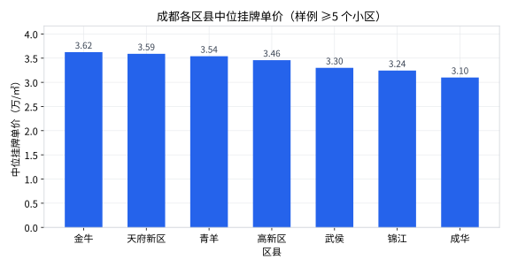

上一课是"上帝视角"看 209 个城市，这一课我们降落地面，用布尔筛选把镜头对准一座城市内部：成都的几个区，哪里的房子最贵？顺带经历一次真实的数据分析日常——计划选的城市数据不够用，临时换目标。
教程原本打算分析济南（毕竟第 1 课看到的前几行都是济南）。于是先查一查济南的区县样本够不够：
import pandas as pd df = pd.read_csv("toy_realestate_sample.csv", encoding="utf-8-sig") df = df.drop_duplicates() df = df[df["synthetic"] == 0] df = df[df["price"].notna() & (df["price"] > 0)] df["district_clean"] = df["district"].astype(str).str.replace( r"^\d{4}", "", regex=True) # 济南各区县的样本量 print(df[df["city"] == "济南"]["district_clean"].value_counts())
去重之后，济南只剩 55 个小区，其中 4 个区的样本不足 5 个。硬要画图的话，"槐荫（1 个小区）vs 历下（40 个小区）"的对比毫无意义。换！选区县样本分布最均匀的大城市——成都（7 个区都有 5 个以上样本）。
教程不会假装每一步都按计划进行。真实工作中，"选好的研究对象数据不够 → 果断换一个"每天都在发生。原则：让问题迁就数据的质量，而不是让结论迁就数据的残缺。
# ① 布尔筛选：只留成都的行 cd = df[df["city"] == "成都"] # ② 按干净区县名分组，算样本量和中位价 result = ( cd.groupby("district_clean") .agg(n=("community_name", "count"), median_price=("price", "median")) .query("n >= 5") # ③ 样本量门槛：n>=5 才有资格上榜 .sort_values("median_price", ascending=False) .reset_index() ) print(result.to_string(index=False))
它等价于 result[result["n"] >= 5]，只是把条件写成一句话，更好读。作用是把样本量太小的组踢出去——第 4 课"小样本陷阱"的行动版。两个写法选顺手的用。
import matplotlib.pyplot as plt plt.rcParams["font.sans-serif"] = ["Microsoft YaHei", "PingFang SC", "SimHei"] plt.rcParams["axes.unicode_minus"] = False fig, ax = plt.subplots(figsize=(8, 4.2)) ax.bar(result["district_clean"], result["median_price"], color="#2563eb", width=0.6) ax.set_ylabel("中位挂牌单价（万/㎡）") ax.set_xlabel("区县") ax.set_title("成都各区县中位挂牌单价（样例 ≥5 个小区）") plt.tight_layout() plt.savefig("chengdu_district.png", dpi=150) plt.show()

看到这张图先别失望——差距不大本身就是重要发现。注意三个层次：
① 整体格局：7 个区都在 3.1～3.6 万之间，最大差距只有 17%。成都的房价分布相当"扁平"——不像某些城市，隔着一条街就是两个价位（回忆第 4 课郑州 1.13 万 vs 10.86 万的 9.6 倍分化）。
② 排名解读要小心：金牛排第一（3.62 万），但它只有 7 个样本——多抽一个贵小区就可能改写排名。青羊 21 个样本、天府新区 15 个，它们的 3.54 / 3.59 反而更稳。
③ 和常识对照：直觉上成都最贵的应该是锦江、青羊（老牌核心区）或高新（新区）。数据说它们和"第一名"没有显著差别。真实市场里成都各区房价差距也确实不算悬殊，这个结论方向上靠谱。
result["district_clean"] + " (n=" + result["n"].astype(str) + ")"）# 练习2：n>=10 后只剩 青羊21 天府新区15 高新区13 三家，金牛(7)、武侯(7)、 # 锦江(9)、成华(5) 被门槛筛掉——榜单变短，但每一条都更可信。 # 练习3： labels = result["district_clean"] + " (n=" + result["n"].astype(str) + ")" ax.bar(labels, result["median_price"], ...)